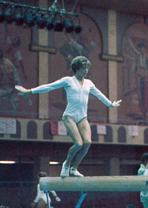

Kolleen Casey (USA)
1975 US Vault Champion
1976 Olympian

Kolleen was born on November 3, 1959 and began gymnastics at age 10. She trained with Mary Ann Hoschette at the St. Paul Turners club. She has 3 brothers (Kevin, Kerry, Kelley) and 2 sisters (Kim and Kris).
Competition Results
1974
AAU Jr. Nationals: 1st AA
Elite Nationals: 24th AA
1975
2nd Elite Qualification Meet: 1st AA
AAU Championships: 25th AA
Pan American Games: 1st Team, 3rd AA, 1st V, 2nd B
Pan American Games Trials: 4th AA
US Championships: 11th AA, 1st V
1976
Chunichi Cup: 7th AA
Mardi Gras Invitational: 2nd AA
FIG Olympic Qualifying Competition: 1st Team, 3rd AA
Olympic Games: 6th Team, 41st AA (prelims)
Tokyo Cup: 3rd V
US Championships: 2nd AA, 2nd V, 3rd B, 6th FX
US Olympic Trials: 2nd AA
USA-CAN Dual Meet: 1st Team, 6th AA
USA-CAN-MEX Tri-Meet: 1st Team, 4th AA
1977
Mardi Gras Invitational: 3rd AA
University Games: 4th V
University Games Trials: 1st AA
US Championships: 12th AA, 3rd FX, 6th V, 6th B
1978
Cottbus International: 6th AA, 3rd UB, 3rd B
This page was created on June 25,
2005 and was last updated on August 23, 2013.
© Gymn Forum